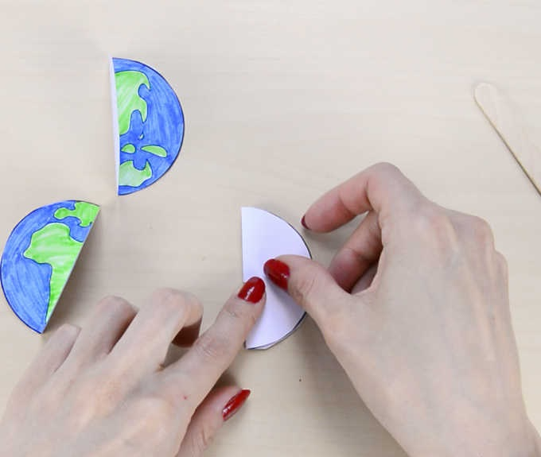
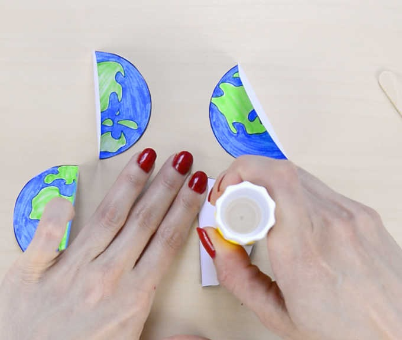
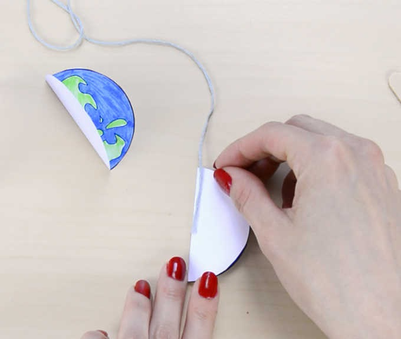
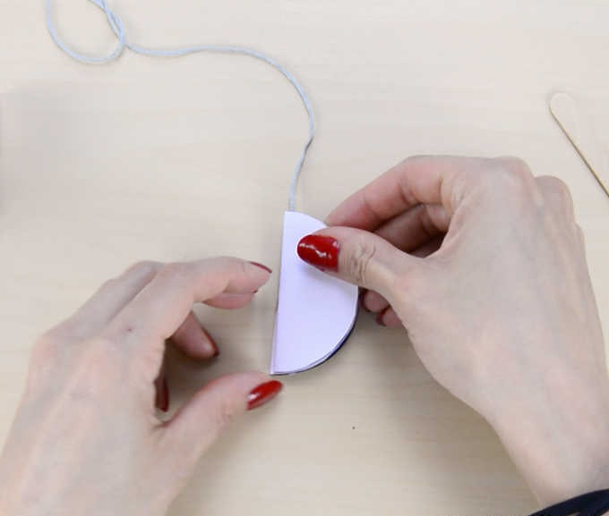
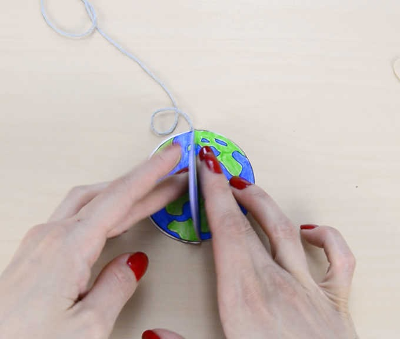
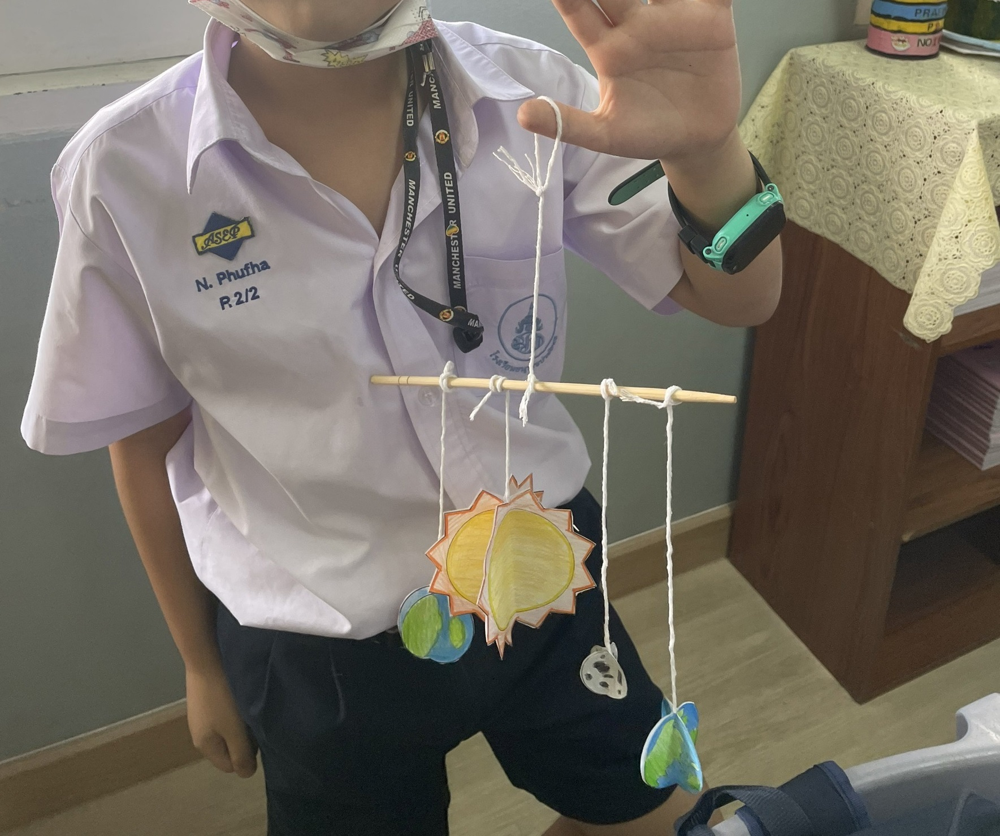

ขั้นตอนการทำ - งานโครงสร้างเคลื่อนไหว (Mobile)
หลังจากระบายสี ทำการตัดออกมา

พับครึ่ง สำหรับดวงอาทิตย์พับให้ตรงกันทั้ง 4 รูป ตรวจสอบให้แน่ใจว่ารอยพับนั้นตรงกัน

ทากาวบนครึ่งวงกลม 1 ด้าน

สามารถติดเชือกตอนนี้ได้เลย หรือเมื่อติดกาวอีกครึ่งวงกลมเข้าด้วยกันแล้ว

ติดครึ่งอื่นๆ ทั้งหมดเพื่อทำให้รูปสมบูรณ์


ทำซ้ำกับดาวอื่นทั้งหมดแล้วผู้กเข้ากับคาน (ตะเกียบ 1 ข้าง) และทำการปรับสมดุลคาน
